Image Warping, Mosaicing
& Automatic Stitching
From manually selected correspondences to automatic feature matching and robust homography estimation, with an extension for rotation-invariant descriptors.
A.1 — Shoot the Pictures
I photographed three overlapping scenes: an interior glass-door scene, a modern building, and a classical building with a tree. For each, I acquired a pair of photographs with sufficient overlapping content to estimate a projective mapping.
Scene 1: Indoor
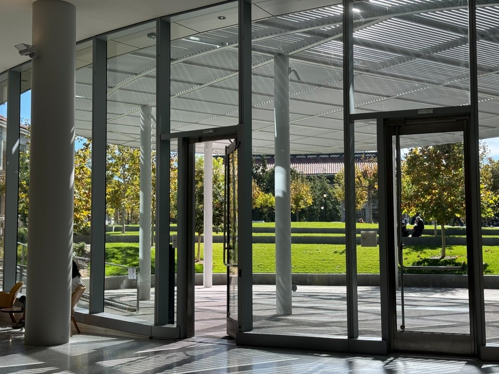
Scene 2: Modern Building
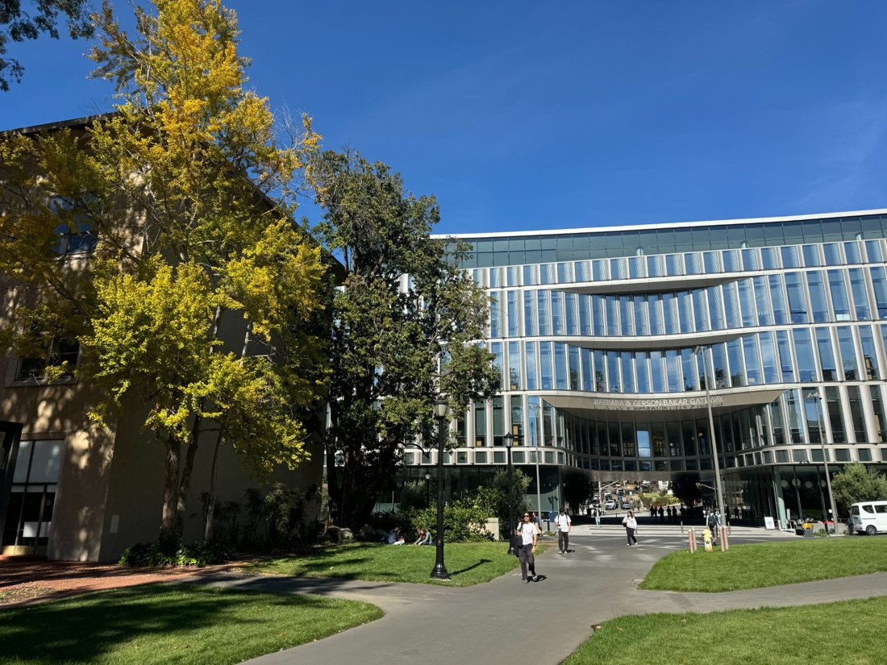
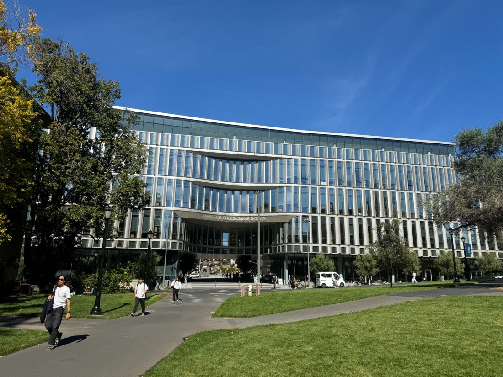
Scene 3: Classic Building
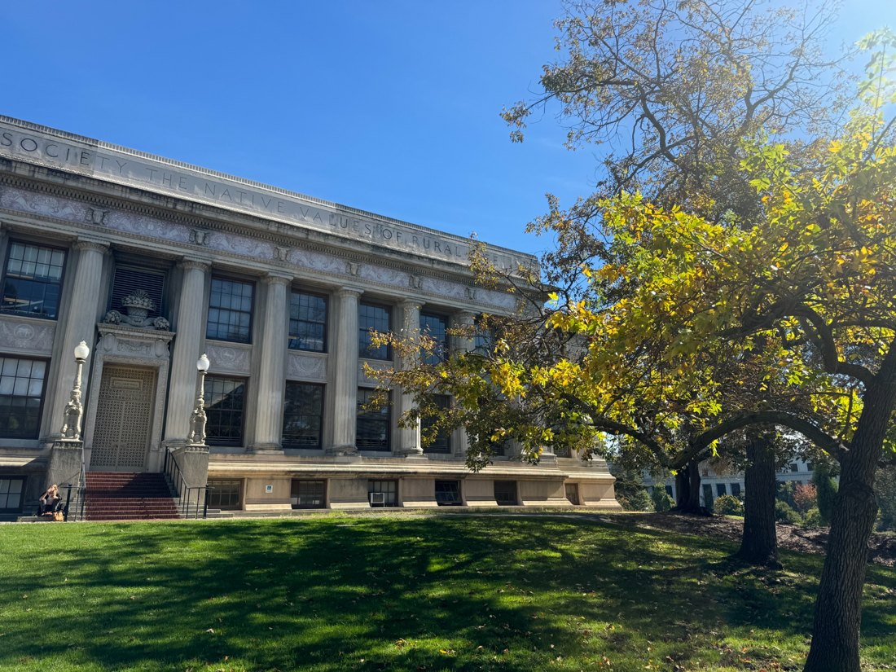
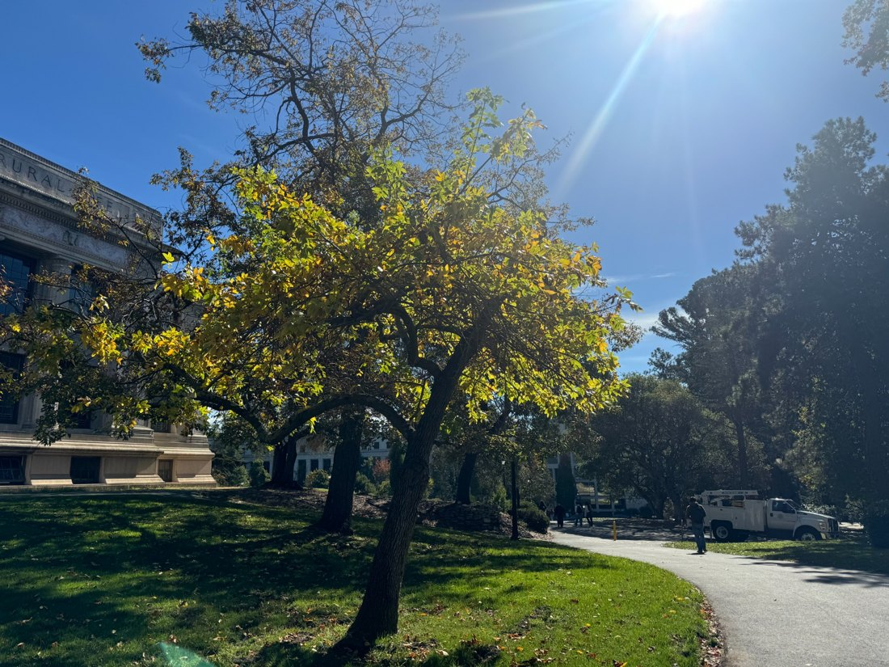
A.2 — Recover Homographies
I selected corresponding features between the overlapping images, then estimated a 3×3 homography mapping image 1 into image 2. With the scale fixed by h33=1, each correspondence provides two linear equations:
x h11 + y h12 + h13 − xx' h31 − yx' h32 = x' x h21 + y h22 + h23 − xy' h31 − yy' h32 = y' A h = b; h = argmin ||A h − b||²; h = [h11,h12,h13,h21,h22,h23,h31,h32]^T
With more than four correspondences, the overdetermined system is solved using numpy.linalg.lstsq. The code implements computeH(im1_pts, im2_pts) without calling a high-level homography library function.
Indoor: recovered 12 point correspondences
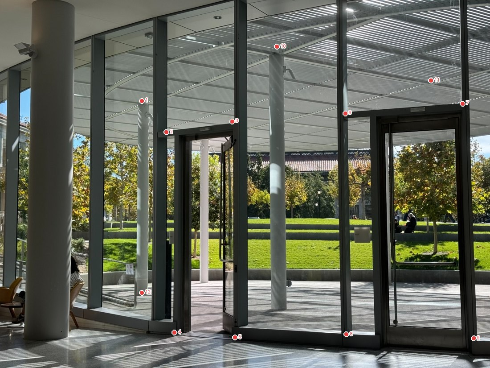
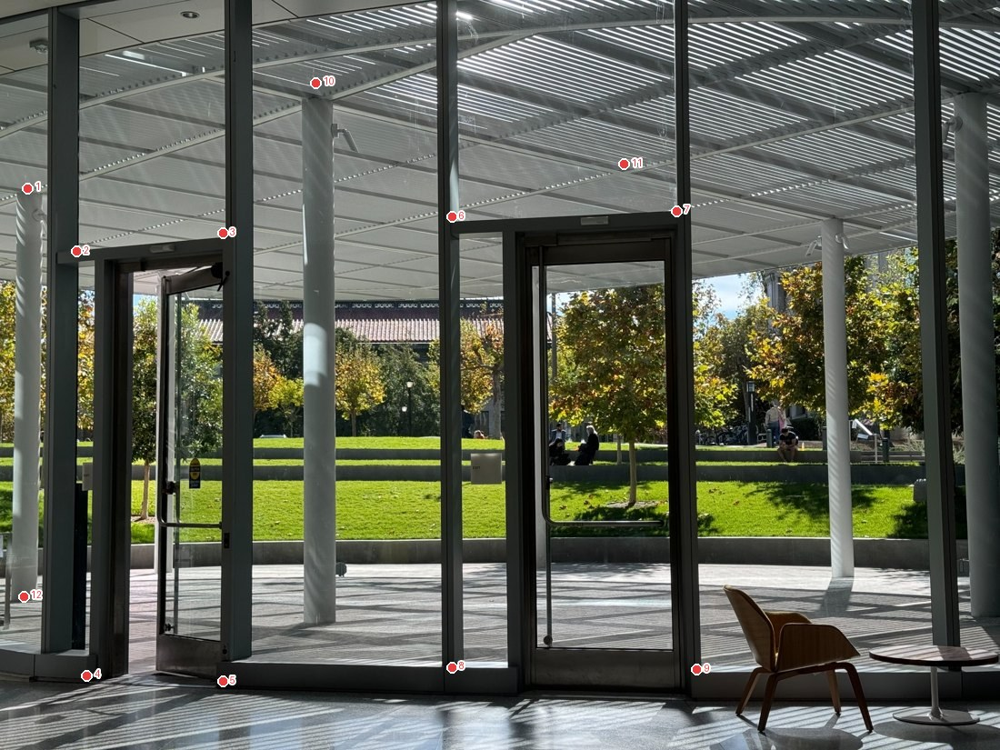
Numbered correspondences are plotted from the saved Indoor point coordinates.
Modern — 12 manually selected corresponding pairs
The same yellow number indicates a matched feature in the two photos. Points were plotted directly from the saved modern_correspondences.npz coordinates, not inferred from screenshots. Open an image in a new tab to inspect it at full resolution.
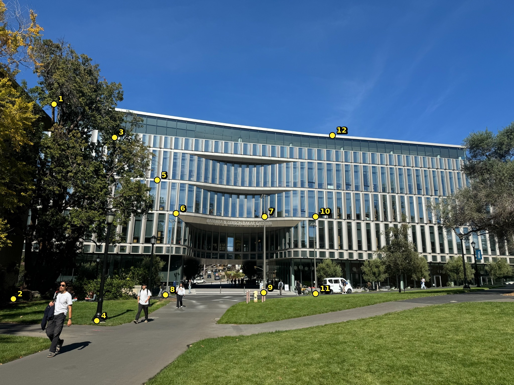
Classic — 12 manually selected corresponding pairs
The same yellow number indicates a matched feature in the two photos. Points were plotted directly from the saved classic_correspondences.npz coordinates, not inferred from screenshots. Open an image in a new tab to inspect it at full resolution.
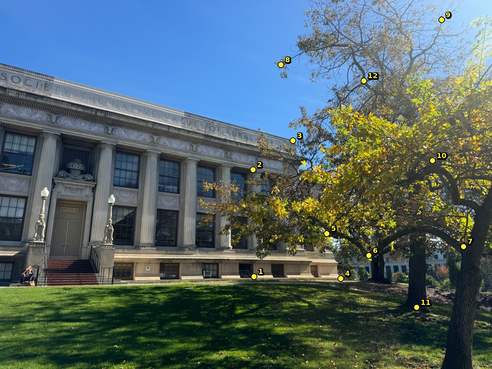
Recovered matrices
IndoorHomography matrix: [[ 1.12636500e+00 -1.82670000e-02 -6.02812926e+02] [ 5.66460000e-02 1.07085400e+00 -9.06043980e+01] [ 6.70000000e-05 -8.00000000e-06 1.00000000e+00]]
Mean indoor reprojection error: 6.17 px (12 correspondences).
ModernModern Homography: [[ 1.75220600e+00 -1.68762000e-01 -1.00952605e+03] [ 4.40776000e-01 1.46872400e+00 -6.39217060e+02] [ 3.77000000e-04 -4.00000000e-06 1.00000000e+00]]Classic
Classic Homography: [[ 2.65862400e+00 -3.38093000e-01 -2.31811179e+03] [ 9.06980000e-01 2.18263900e+00 -1.40231065e+03] [ 8.49000000e-04 -3.70000000e-05 1.00000000e+00]]
A.3 — Warp and Rectify the Images
Given a forward mapping p_dest ~ H p_src, the inverse-warping step evaluates p_src ~ H^-1 p_dest. Sampling an input image in this direction avoids sparse holes. My two samplers are implemented directly in NumPy.
For bilinear interpolation, with fractional source coordinates (x,y), let x0=floor(x), y0=floor(y), a=x-x0, b=y-y0. Then I(x,y)=(1-a)(1-b)I00 + a(1-b)I10 + (1-a)b I01 + ab I11. Nearest neighbor uses the pixel at the rounded source coordinates. Pixels whose source coordinates lie outside the image are excluded by the validity mask.
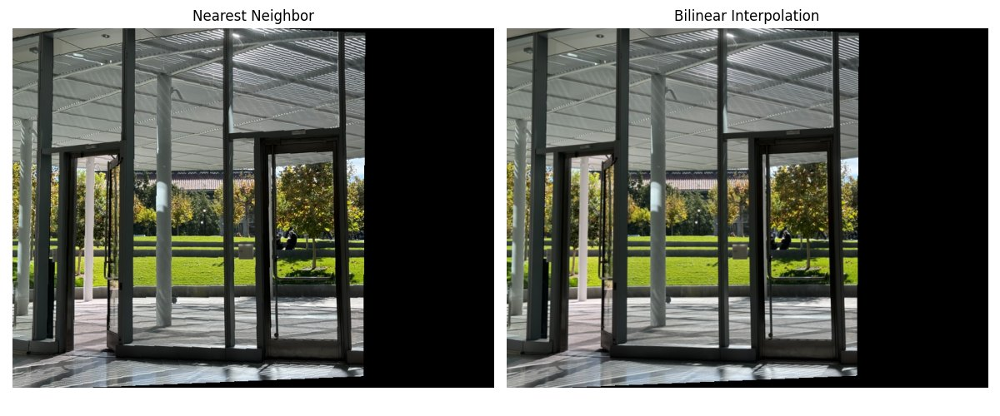
| Interpolation | Runtime (notebook) | Visual trade-off |
|---|---|---|
| Nearest Neighbor | 0.091 s | Faster but sharper, more jagged sampled edges |
| Bilinear | 0.229 s | Smoother output with higher computational cost |
To validate perspective rectification, I chose four corners of two photographed rectangular posters, defined the destination rectangle, computed a homography, and applied both samplers.
Avengers poster — source and both rectifications
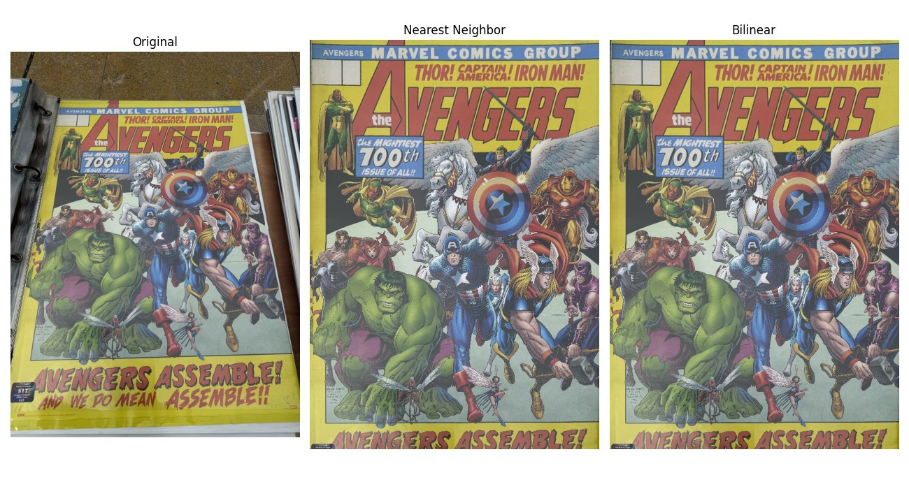
Spider-Man poster — source and both rectifications
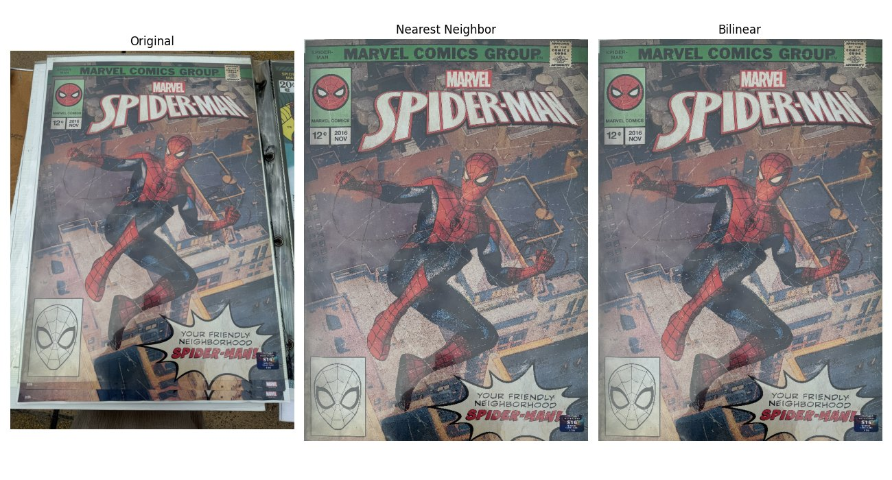
A.4 — Blend Images into Mosaics
I mapped the corners of the images to determine a shared canvas, shifted the canvas with a translation matrix, and inverse-warped both images into that coordinate system. Valid-pixel masks and distance transforms determine spatially varying blend weights. In the final two-frequency implementation, Gaussian-smoothed low frequencies are blended using normalized distance-transform weights, while high-frequency details are selected from one input according to which weight is greater. This is a simple two-band frequency blend; it is not a complete multilevel Laplacian pyramid. The more basic feather and hard-cut outputs are included for comparison.
Indoor mosaic — corresponding inputs, warped canvas and blending comparison
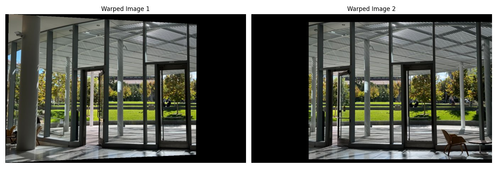
Comparison of composition approaches
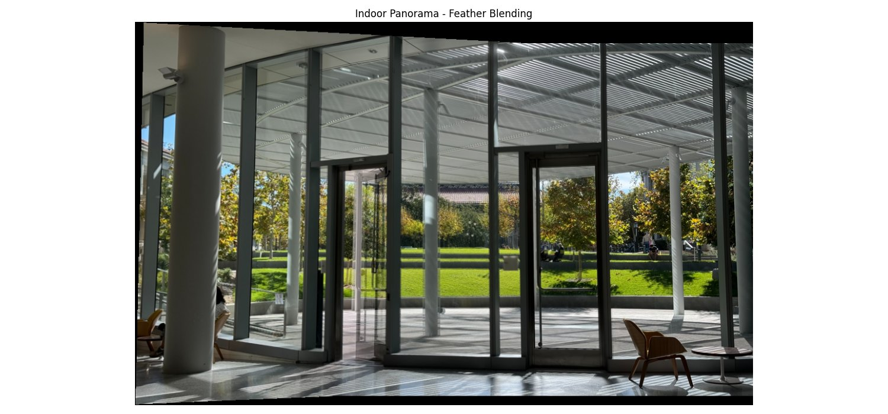
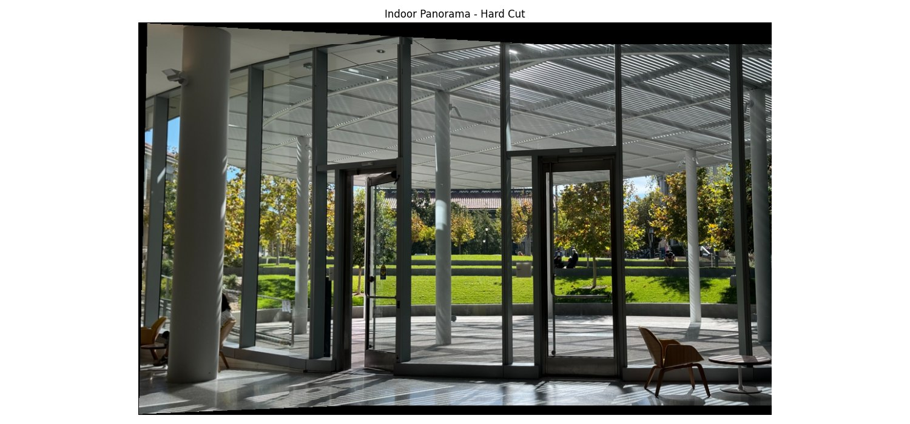
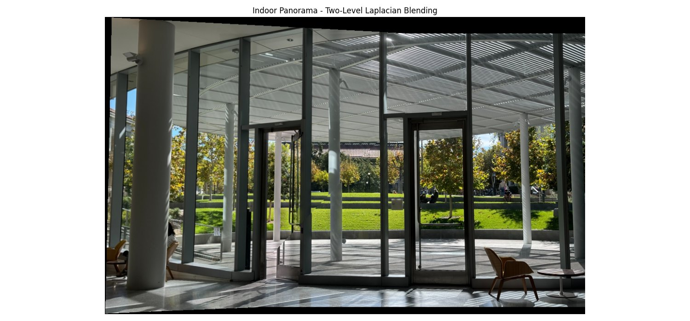
The indoor glass door changed its opening angle between shots. Because this is a moving object rather than a single fixed scene plane, its edges cannot be perfectly aligned by one homography.
Modern Building mosaic — sources and blended output
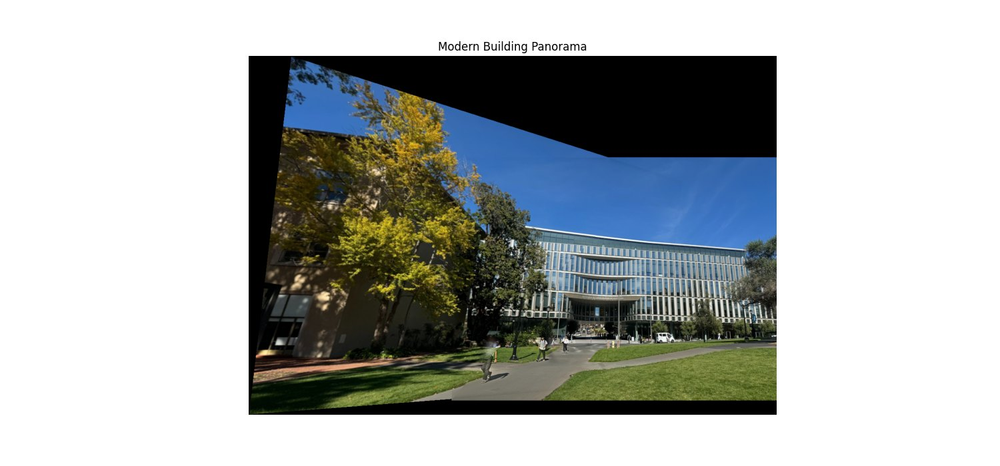
Buildings align broadly, while pedestrians who moved between exposures can produce ghosting. Remaining black areas show pixels not covered by either warped input; the blending stage does not invent image content.
Classic Building mosaic — sources and blended output
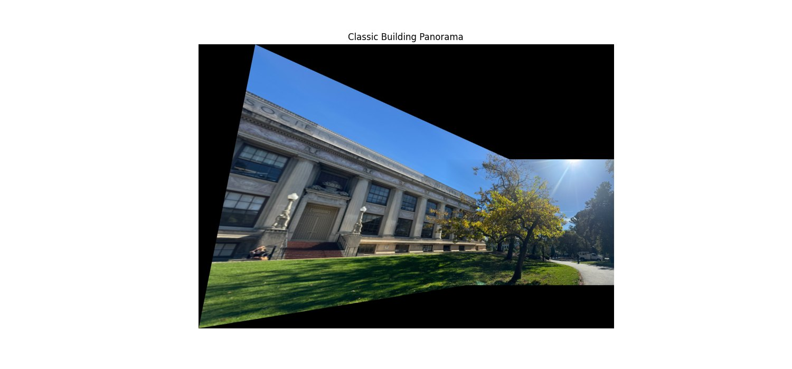
The strong difference in viewpoint leads to pronounced perspective deformation and unfilled regions. Cropping enough to remove all empty areas would discard substantial image content. The tree and architecture also introduce depth variation / parallax that a single homography cannot fully model.
B.1 — Harris Corners and ANMS
To replace manual correspondences, I first detect Harris corners on grayscale images using the provided sample-code approach (corner_harris, epsilon response, σ = 1). Local maxima must exceed 1% of the maximum response, and points within 20 pixels of an image boundary are discarded to support descriptor extraction. The Indoor left image retains 23,388 candidate corners after thresholding.
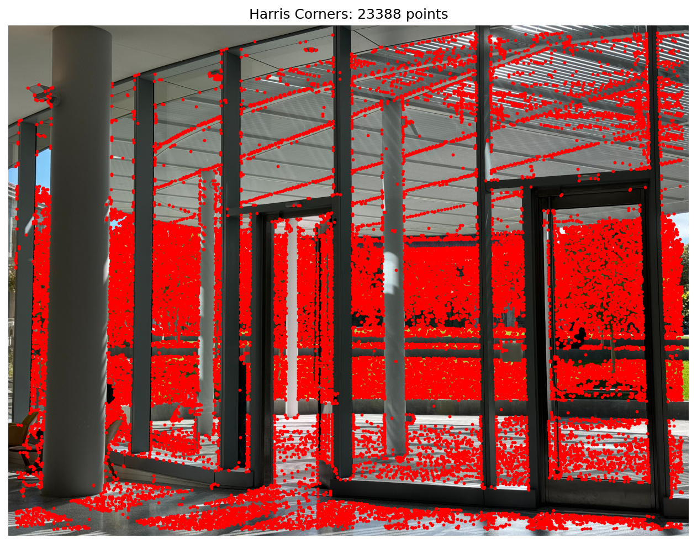
Adaptive Non-Maximal Suppression (ANMS) selects 500 corners. For each candidate i, I compute its squared distance to the nearest candidate j satisfying fᵢ < 0.9 fⱼ, then retain the largest suppression radii. This favors strong, spatially distributed corners over a dense cluster of strong responses.
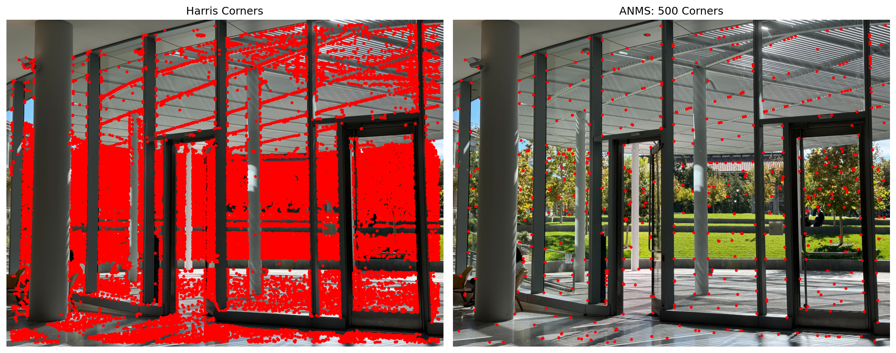
B.2 — Feature Descriptor Extraction
Each corner is represented by an axis-aligned, normalized 8 × 8 grayscale patch. I Gaussian-smooth the image with σ = 2, extract a 40 × 40 neighborhood, and sample it every five pixels. Subtracting the patch mean and dividing by its standard deviation reduces sensitivity to additive brightness changes and multiplicative contrast changes. Each descriptor is a 64-dimensional vector; the Indoor image yields an array of shape (500, 64).
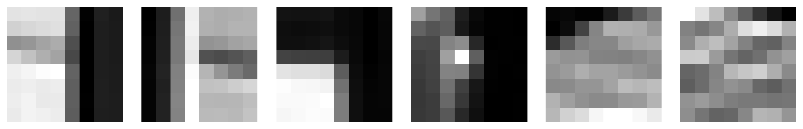
B.3 — Feature Matching
I compare descriptors using Euclidean distance. A candidate match is accepted only when its nearest-neighbor distance is less than 0.7 times its second-nearest-neighbor distance. Near-zero second-neighbor distances are rejected because they indicate ambiguous descriptors. This produces 151 candidate matches for Indoor, including mismatches caused by repeated structures.
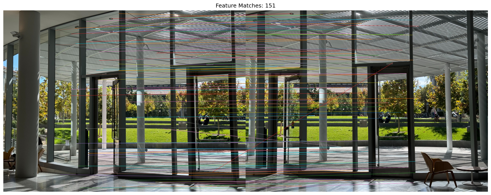
B.4 — Four-Point RANSAC and Automatic Mosaics
I implement RANSAC from scratch. Each of 2,000 trials samples four matched pairs and estimates a homography using the same least-squares solver as Part A. A match supports the model when its forward reprojection error is less than 4 pixels in the original images. Rank-deficient samples are skipped. I retain the model with the most support, refit it using its inliers, and recompute the final inlier mask against that refitted matrix. The random seed is fixed at 42.
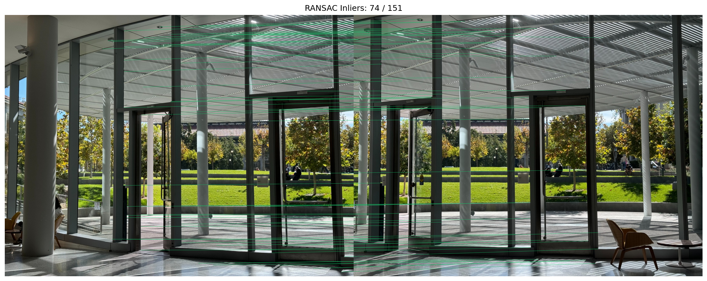
| Scene | Candidate matches | Final inliers | Inlier ratio | Median inlier error |
|---|---|---|---|---|
| Indoor | 151 | 74 | 49.0% | 1.68 px |
| Modern | 50 | 28 | 56.0% | 1.79 px |
| Classic | 44 | 30 | 68.2% | 1.00 px |
Reprojection errors are measured on the fitted inlier correspondences at original resolution; they are not held-out alignment errors.
For a direct comparison, both manual and automatic homographies use the same Part A inverse warping and two-frequency blending pipeline, with images resized to 40% for rendering. Only the source of correspondences changes.
Indoor: manual versus automatic
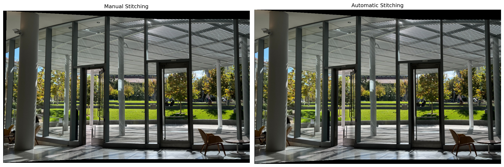
The static window frames and roof structure are broadly consistent between the two results. The door changed its opening angle between captures, causing local ghosting in both mosaics; one homography cannot align both door positions.
View the indoor automatic mosaic at full resolution ↗
Modern Building: manual versus automatic
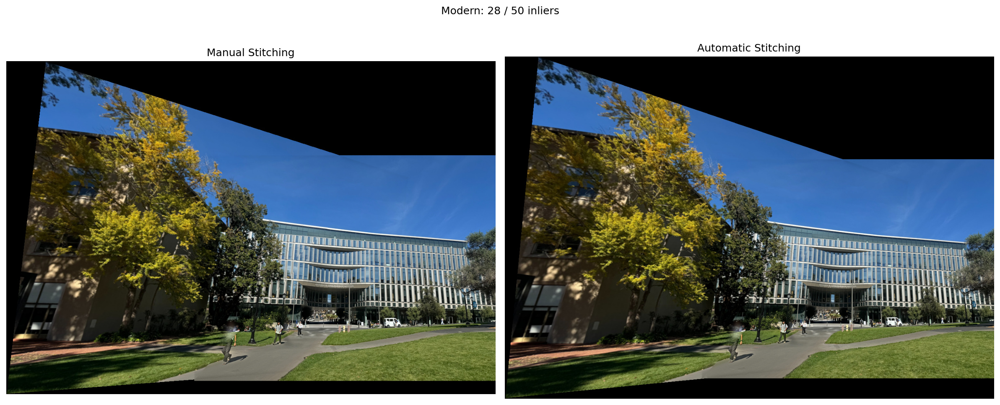
The building facade is broadly aligned in both results. Local blending transitions remain visible in the sky, and the foreground pedestrians differ between captures.
View the modern building automatic mosaic at full resolution ↗
Classic Building: manual versus automatic
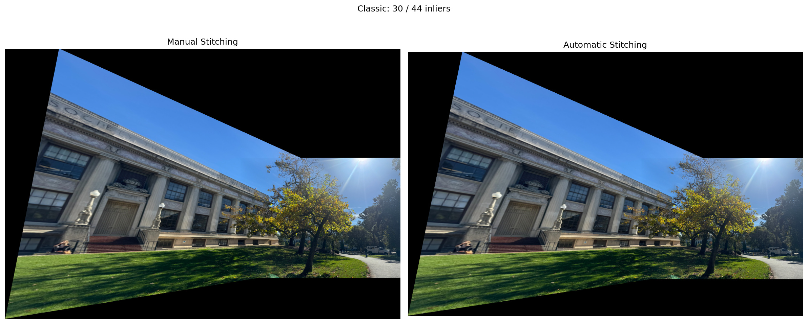
The automatic mosaic is visually similar to the manual mosaic at this display scale. The slanted outline follows the selected reference view, and black regions are outside the warped image support.
View the classic building automatic mosaic at full resolution ↗
B.5 — Rotation-Invariant Descriptors
The extension estimates a local orientation from Gaussian-smoothed image derivatives (σ = 4): θ = atan2(Iᵧ, Iₓ). I rotate the descriptor sampling grid by θ and bilinearly sample the σ = 2 smoothed image before applying the same intensity normalization. Axis-aligned and oriented descriptors share one implementation with a rotation switch. A 30-pixel corner margin protects the rotated sampling region.
Controlled experiment
I resize the Indoor left image to fit within 800 × 800 pixels and generate rotated copies at 0°, 30°, 60°, and 90°. Harris detection and ANMS run independently on each image, retaining up to 300 corners. Corners within 30 pixels of the rotated image’s valid-support boundary are excluded. Both descriptor methods use exactly the same detected point sets and the same 0.7 matching threshold.
Unlike RANSAC consensus, this experiment has a known geometric transform: a match is counted as correct only if its distance from the true rotated location is less than 3 pixels at the resized resolution. No RANSAC filtering is applied to these counts.
| Angle | Baseline correct / accepted | Oriented correct / accepted | Oriented precision |
|---|---|---|---|
| 0° | 300 / 300 | 300 / 300 | 100% |
| 30° | 0 / 1 | 220 / 223 | 98.7% |
| 60° | 0 / 1 | 218 / 221 | 98.6% |
| 90° | 0 / 5 | 296 / 296 | 100% |
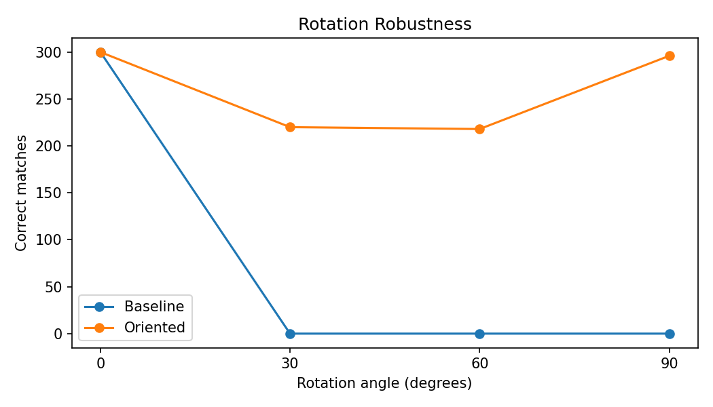
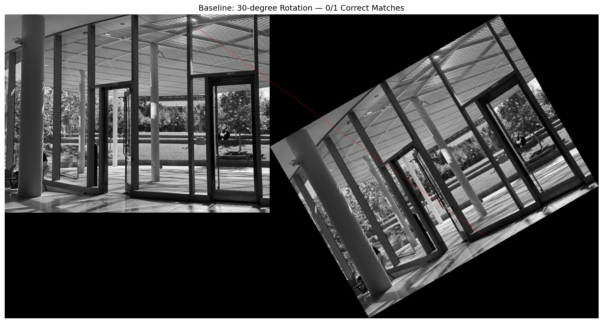
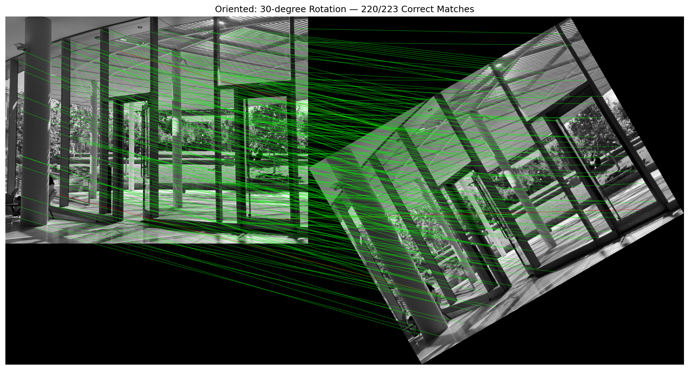
At 0°, both methods recover 300 correct matches. At 30° and 60°, orientation normalization recovers 220 and 218 correct matches, respectively, while the axis-aligned baseline recovers none under the same threshold. This supports improved rotation robustness in the controlled experiment. The extension is evaluated separately; the three automatic mosaics above retain the verified axis-aligned baseline results.